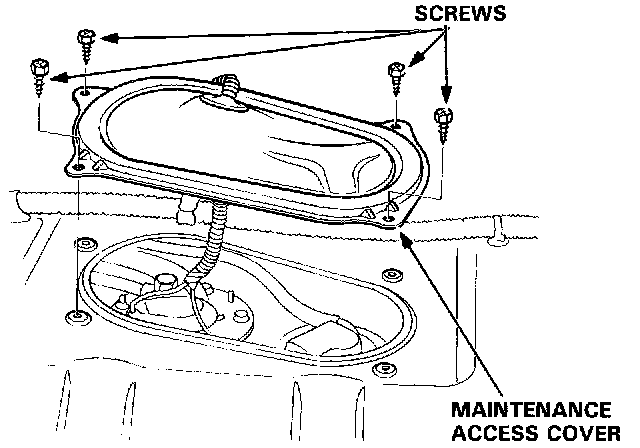
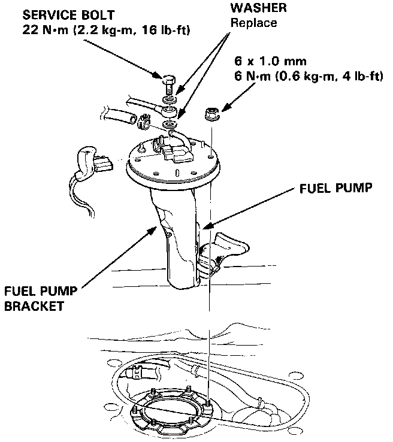

Coupe
Fuel Pump ReplacementWARNING: Do not smoke while working on fuel system. Keep open flames away from your work area.
1. Relieve fuel pressure.

2. Remove the maintenance access cover in the luggage area.
3. Disconnect the fuel lines and connector.
4. Remove the fuel pump mounting nuts.

5. Remove the fuel pump from the fuel tank.